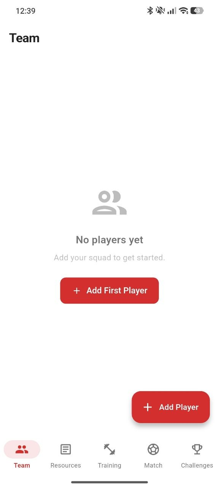
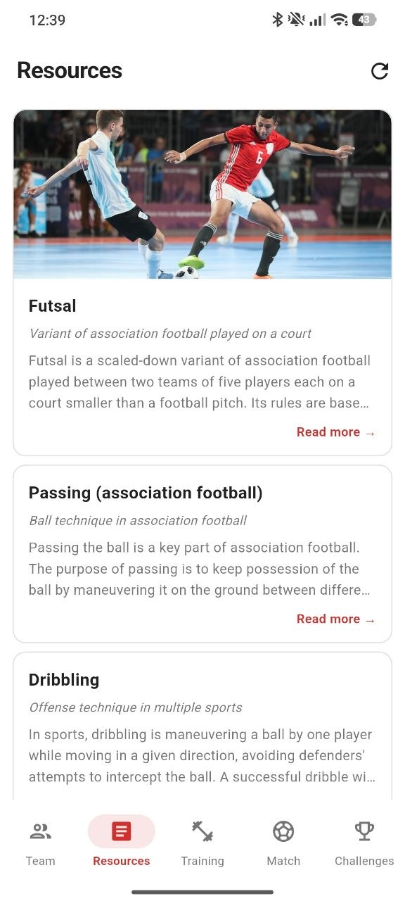
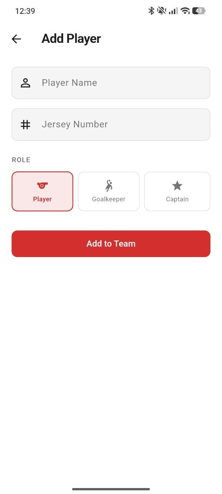
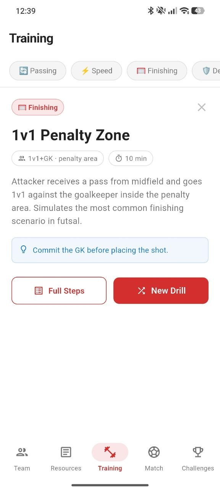
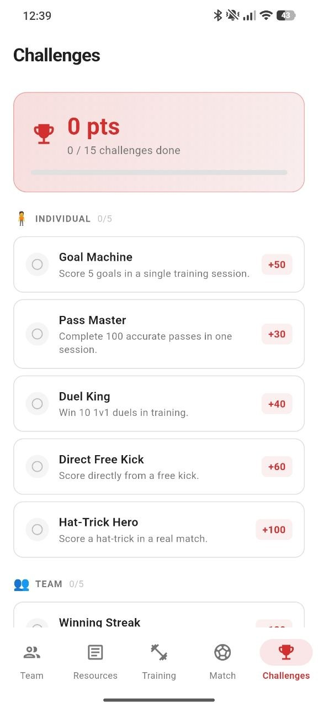
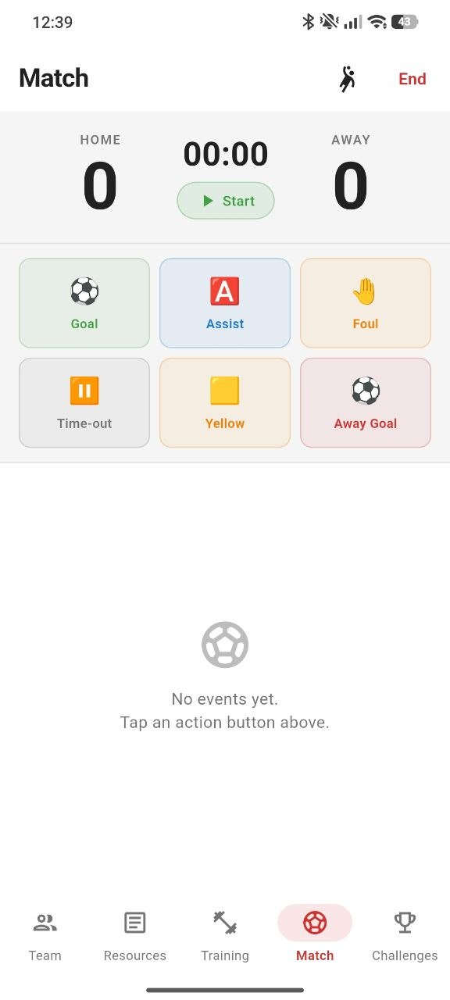
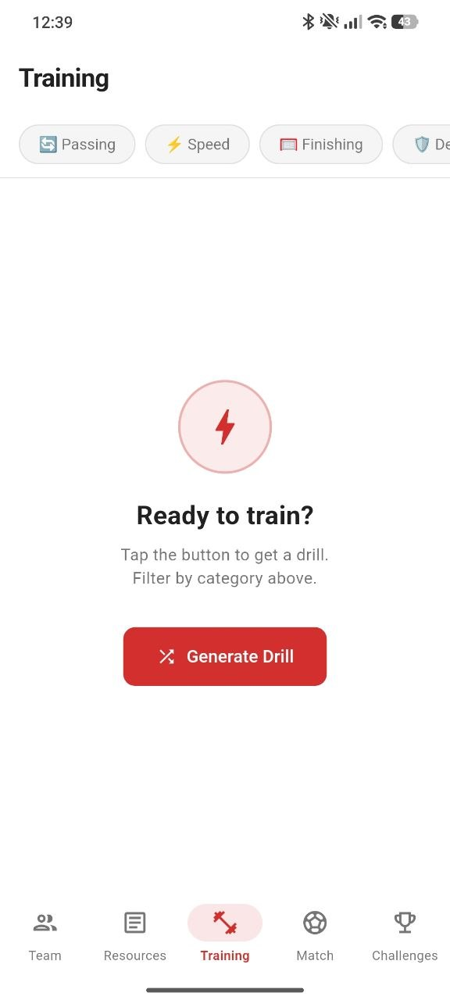
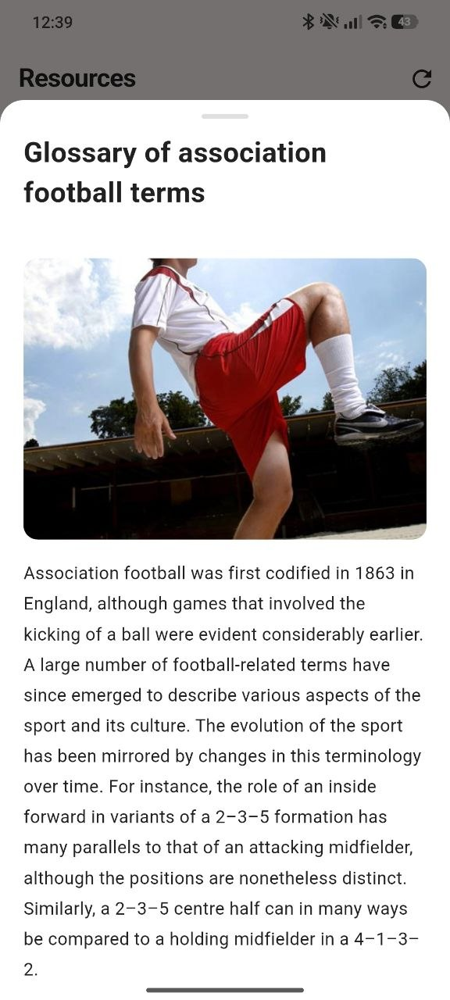

Team Builder
Add players, jersey numbers, and roles. Keep your squad ready for matches and training sessions.
Build your team, explore football resources, generate training drills, track live match events, and complete challenges — all in one clean coaching workspace.

Pnc Futsal Coach is not just a form-based tracker. It feels like a compact command center for your team: fast actions, sharp cards, useful football resources, and a match screen designed for quick use during real games.
From first player creation to match-day decisions, every screen is made to reduce chaos and keep your squad organized.
Add players, jersey numbers, and roles. Keep your squad ready for matches and training sessions.
Read useful futsal and football concepts directly inside the app with clean resource cards.
Generate focused drills by category: passing, speed, finishing, defending, and more.
Track goals, assists, fouls, yellow cards, time-outs, and away goals with quick match buttons.
Motivate players through individual and team challenges with point rewards and progress tracking.
Build better habits by turning sessions, drills, and match actions into measurable growth.
A visual tour through the app experience — team, resources, training, match controls, and challenges.





Select a category, create a drill, read the coaching point, and use the session to improve specific futsal skills. Perfect for coaches who want fast ideas without wasting time before practice.
Attacker receives a pass from midfield and goes 1v1 against the goalkeeper inside the penalty area.
During futsal, every second matters. The match tracker keeps actions clear and touch-friendly so coaches can log important events quickly.
Use short and practical learning material to explain futsal basics, tactics, passing, dribbling, and match understanding.
Learn the basics of the game, team size, court structure, and match rhythm.

Explore important football terms and understand how positions, formations, and techniques work.

Keep every drill simple, clear, and useful for actual practice.
“The app makes it much easier to prepare a small futsal session and keep the team organized.”
Academy Coach“The training generator is simple, but very useful when you need a quick drill idea.”
Team Captain“Good for tracking match events without making the interface too complicated.”
Futsal ManagerDownload Pnc Futsal Coach and turn your squad, training sessions, and match events into a clean coaching system.
Download on Google Play →